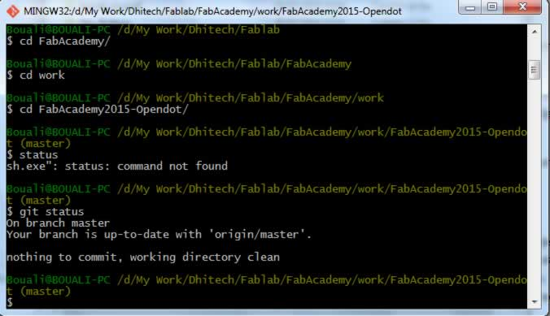
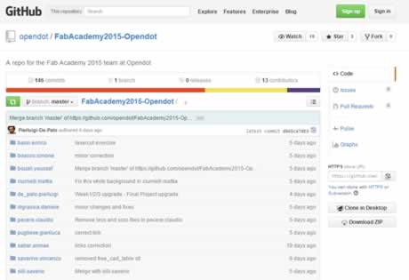
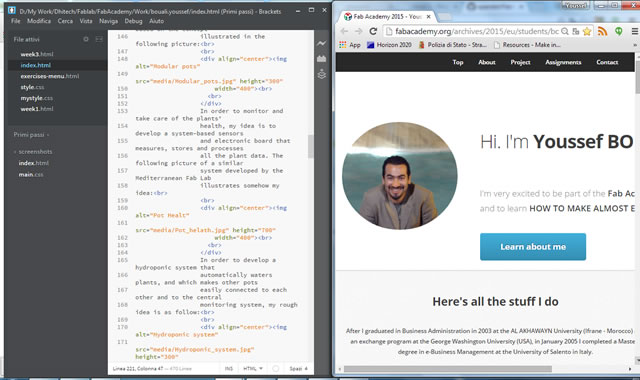
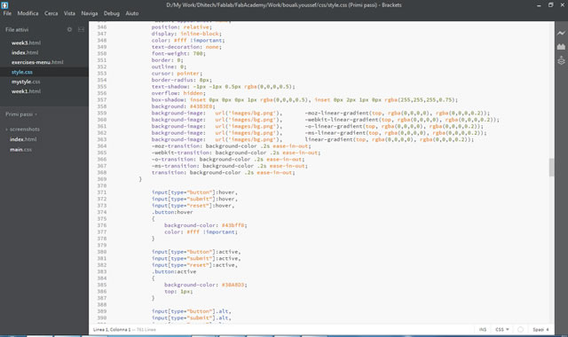
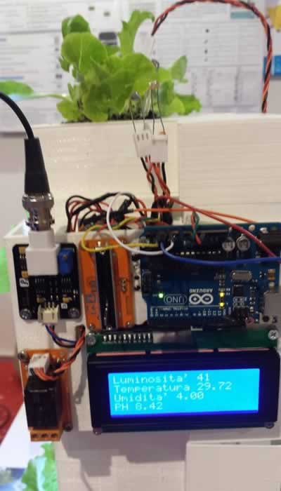
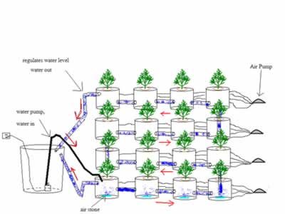

Module 1: Principles and Practices, Project Management
This is the starting week where I think was very exciting and interesting. We got a very broad background about the FabLab concept and organization. Then we moved toward first week materials and assignments, and we discussed the concepts of project management, work documentation and sharing, and finally personal website that will be published on the FabAcademy central repository.
Module contents:
Project management tools: introduction to Mercurial and installing the tool in order to manage (share, upload, versioning, etc) all the work we will be developing during the FabAcademy course.
Website creation: this part deals with HTML language in order to build web pages that compose a website, and website creation tools and techniques like, Brackets, Eclipse, LibreOffice Writer/Web, SeaMonkey, Dreamweaver
Final project proposal:gather ideas, select one and explain what is does, and then document a possible final project
My work:
Project management tools: with our FabLab tutor we had a detailed tutorial about project management processes, then we installed Mercurial and Git in order to get some practice and start using it for document management. We did all the necessary setup and started learning the basic commands. After some initial problems related with installation and commands, I managed to setup my personal directory on my PC and synchronize it with the GitHub online repository:


Website creation: I have medium knowledge of HTML which helped me a lot getting ahead with this work. Within our tutor I had the chance to learn new tools and new techniques related to CSS and many tips in order to manage many aspects of HTML pages. We got introduced to many tools, but I feel more confortable working with Brackets which I used massively in order to develop and modify my webpage.
I started from an open source HTML template that I found online, then I made many changes related to the code and the graphical part in order to personalize it to my preferences and needs.


Final project proposal: after exploring many ideas related to personal interest and reflections about day-to-day situations and problems, I discussed them with my colleagues and tutor looking for feedback and further enhancements. Thus I decided to concentrate on a project related to Hydroponic systems for house use that are modular and electronically monitored. This is how I came up with this idea:
The Project: Modular Home Hydroponic system is a new kind of user friendly scalable hydroponic systems. It allows people to grow plants in intelligent pots that have nice and modular design, and which health is continuously monitored in order to grow in optimal conditions.
The problem or inspiration: In the past years, I have observed my wife dealing with many difficulties related to growing plants
inside our house. Part of the problems were related to frequency and quantity of watering, single pots placed over various home objects which made the house somehow looking bad, and the problem of taking care of plants when we were away for holidays, etc.
While reflecting about the problem I started questioning: Why can’t we have intelligent pots that monitor and tell us the necessary information about each specific Pot/plant? Why can’t we have nice modular pots that each user can compose and place in his house
according to his preferences and requirements? Why can’t we have a pot that waters automatically the plants?
Possible solutions: In order to face the modular feature of the pots, my idea is to develop objects based on the concept
illustrated in the following picture:

In order to monitor and take care of the plants’ health, my idea is to develop a system-based sensors and electronic board that measures, stores and processes all the plant data. The following picture of a similar system developed by the Mediterranean Fab Lab
illustrates somehow my idea:

In order to develop a hydroponic system that automatically waters plants, and which makes other pots easily connected to each other and to the central monitoring system, my rough idea is as follow:
